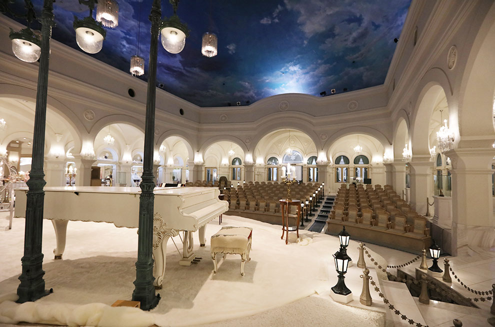

搭乘時間：2018/10/28-2019/03/30
| 航班號 | 航線 | 起飛時間 | 抵達時間 | 飛行日 |
| IT238 | 桃園－旭川 | 07:10 | 12:00 | 每周二、六 |
| IT239 | 旭川－桃園 | 13:35 | 17:40 | 每周二、六 |

巴士：
▪機場至旭川市區：搭乘機場接駁巴士，車程約30-40分鐘，單程票價620日圓
▪機場至旭山動物園：搭乘巴士車程約35分鐘，單程票價550日圓
▪機場至JR富良野站：搭乘巴士車程約60分鐘，單程票價770日圓


旭川動物園
旭川超人氣旅遊地，連媒體都喜愛，特別是冬季限定的企鵝漫步，近距離觀看企鵝遊行，可愛度爆表

雪の美術館
外觀類似中世紀歐洲古城，內部宛如雪之宮殿，有教堂、博物館等以雪為主題的空間，非常浪漫
旭川冬祭
北海道必去的冬日祭典之一，不用支架、完全以冰雪堆砌而成的巨型雪雕是最具代表性的特色

醬油拉麵
北海道三大拉麵之一，以豚骨或牛骨和雞骨，加上魚乾魚介等材料長時間慢火熬煮，是旭川必吃的美味
新子燒
旭川名物，使用剛長大的雛雞切半以特製的醬汁醃製後炙烤，外皮薄脆鮮嫩多汁，光看就食指大動

鹽味內臟
發源於旭川的鹽味內臟，先將新鮮的內臟以特製湯汁醃過後再燒烤，爽朗的風味搭配啤酒正好